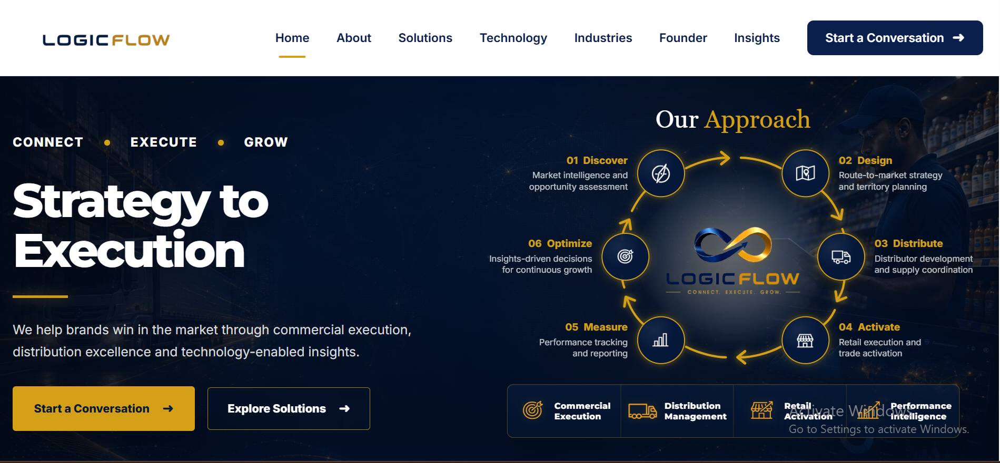

VIEW LIVE SITE ↗01 / CORPORATE
Business websiteLogicFlow
A confident digital presence for a commercial execution and distribution partner, with structured service pages and a clear path to enquiry.
PHPResponsive UISEO foundationsSecurity
Explore project ↗